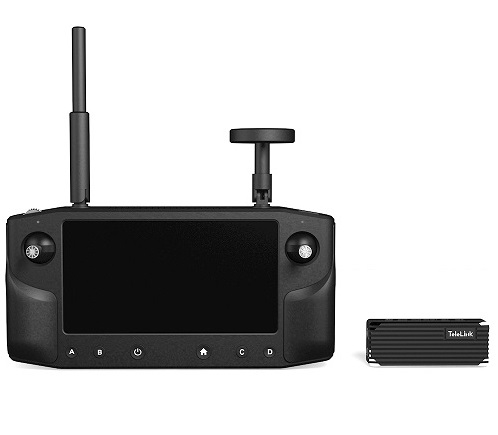
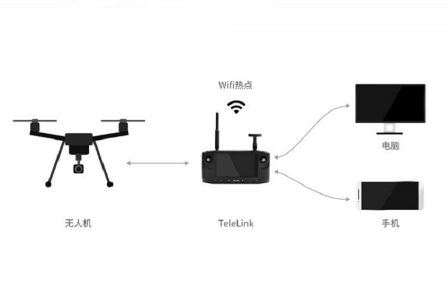
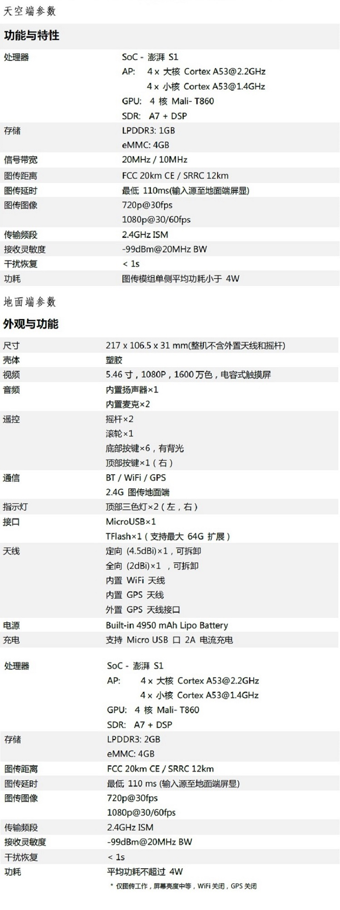

Telelink 图传
12 may 2020
Telelink是一款集屏幕、数传、图传、遥控器于一体的无人机智能遥控器；它搭载了1080与600尼特的高亮度显示屏，同时集成了20km的数传和图传，并且运行安卓系统和QGoundcontrol地面站，可以用于植保、航拍、巡检、科研等领域。...
TeleLink硬件上采用片上系统SoC设计，在单个芯片上集成了 基于
LTE技术无线的通讯系统、图像编解码处理系统和其他支撑系统子
模块。利用全链路深度 优化技术，带来远距离、低延迟，低功耗的更
好体验。
在软件上，TeleLink运 行安卓系统，内置QGC地面站，同时兼容
APM及PX4开源飞控。最低70ms的延迟，实现了对飞行信息及高
清图像的流畅观测和控制。

TeleLink 提供了数据转发功能，通过WIFI无线网络，可将实时视频及飞行数据共享到PC或手机，可实现多屏观看，协同控制。TeleLink有双路HDMI 接口视频图像输入，支持720p 30fps， 1080p 30fps/60fps 视频格式 。

